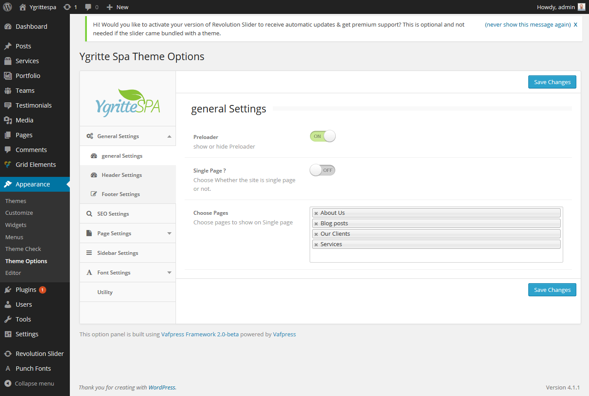
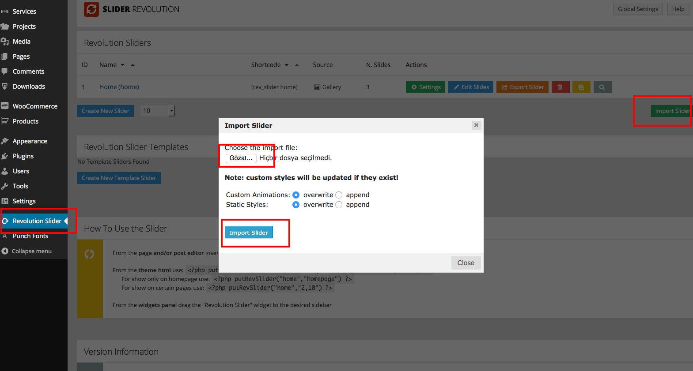
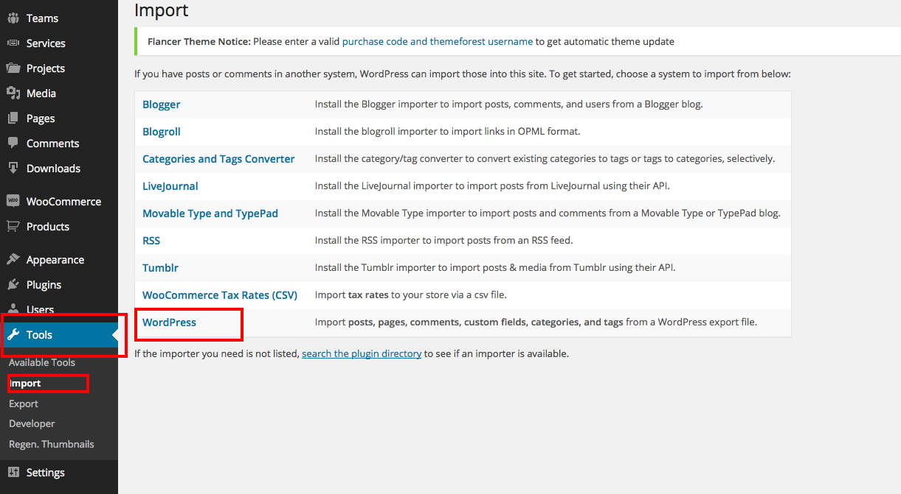
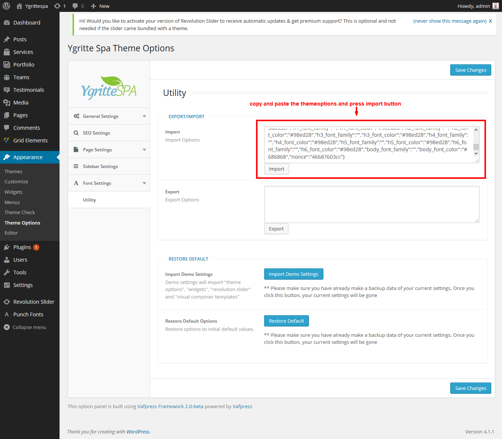
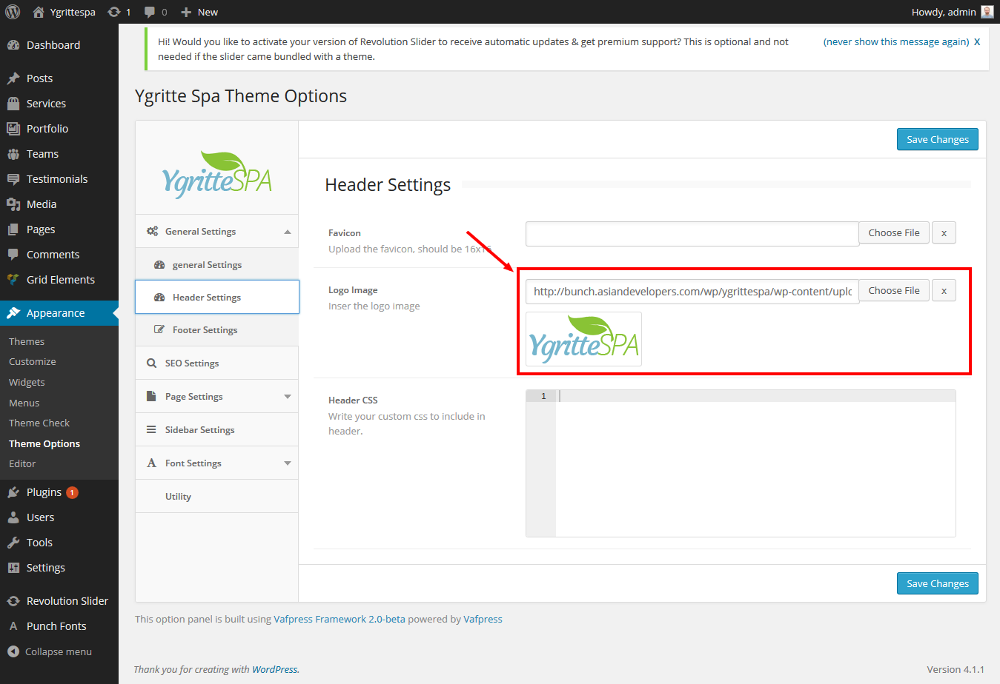
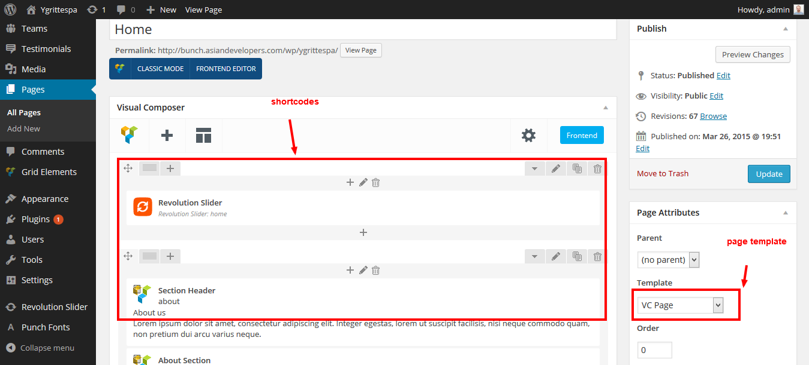
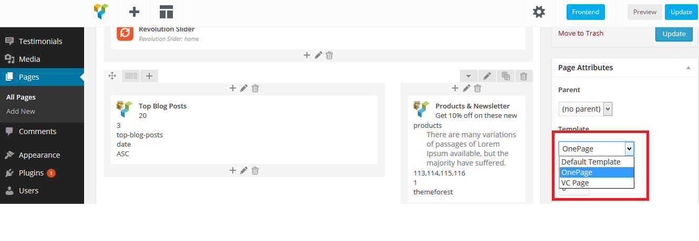
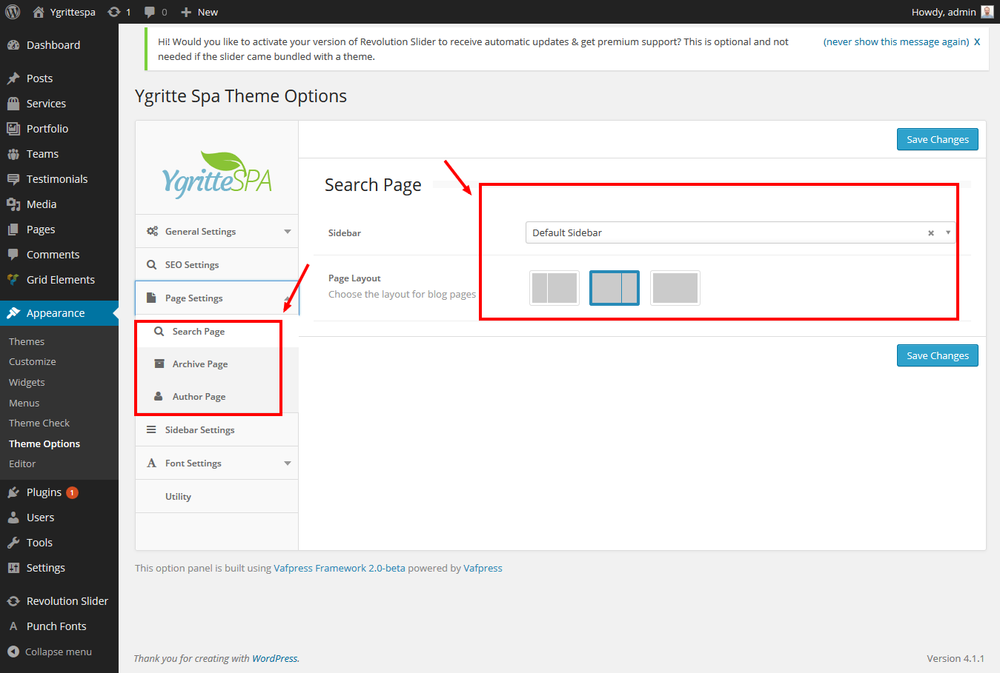

We would happily welcome feedback from you on how, if anywhere, you would like this documentation improved. If you would find anything a little bit easier and more helpful if we went into more detail, or explained something a little better - we'd be happy to hear it. We want Ygrittespa to be the best theme! If you have any comments, please mail us via the form on http://www.themeforest.net/user/themexlab
The Import and Basic Setup Process:
You can check the video directly from youtube by clicking this link https://www.youtube.com/embed/sT0E22tMn44
To manually upload your new WordPress theme, login with your credentials to your website and locate the wp-content folder in your WordPress install files. Upload the un-zipped flancer folder into the: wp-content/themes folder.
Once uploaded, activate the theme by heading to the “Themes” menu in the WordPress Dashboard. Locate the Ygrittespa theme and hit “Activate”.
The Ygrittespa WordPress theme compatible with custom and powerful plugins. First you want upload and activate these plugins from your WordPress dashboard panel. You will see a notice after installation Ygrittespa theme on your dashboard like This theme requires the following plugin then click Begin installing plugin and download / install all recommended plugins...
WPBakery Visual Composer - Visual Composer for WordPress is drag and drop frontend and backend page builder plugin that will save you tons of time working on the site content.
Revolution Slider - Create a responsive (mobile friendly) or fullwidth slider with must-see-effects and meanwhile keep or build your SEO optimization.
Theme Support - This plugin is required plugin having the functionality of theme.For proper theme functionality this plugin is must to installed and activated.
Our Theme Options Panel have too many options to make changes easily with your theme. Please click "Save All Changes" button to save your settings once you are done.
General Settings: In this general options, you will preloader module enable/disable, Single or multipage options
Header Settings: In header setting section you will see custom favicon and logo uploaders,logo with image, custom CSS options and much more.
Footer Settings: You can set the profile links for social media, add copyright message and add custom js codes on this option and you can add Footer Analytics / Scripts. (Write your custom js to include in footer.)
SEO Settings: With this option you can control homepage and archive page SEO settings. For example you can add your own SEO title, descriptions and tags. Also we added to this option for all post types and post formats. You never need any SEO plugins!
Page Settings: Add default values for standard pages, for example search page, sidebar options background options etc.
Sidebar Settings: You can build unlimited sidebars with this option! You can build a new sidebar here and then click wp-admin > appearance > widgets and check your new sidebar here. Then use this sidebar and widgets area which pages you want.
Font Settings: In this option you will see, custom font options. For example you can change all heading fonts, colors and all body fonts and colors, sizes etc.
Utility: With this option you will see export / import options and restore options to initial default values..
By cliclikng on above button you will get all posts,pages,themeoptions,shortcodes and slider.
This theme comes with custom(manual) import options. For example post data entry import file (wordpress-dummy.xml) and revolution slider import files (slider.zip). And theme options import from word doc. All import files from folder Import folder.
Revolution Slider ImportIf would you like to use the Revolution slider like our demo, please import all revolution slider files. Please go wp-admin > Revolution Slider > mport & Export Sliders then click Import button and select rev-slider.zip file from Import folder
 Site Pages & Posts ImportIf would you like to use your site like my demo site, its very very easy. Just import all pages, posts, menus, forums etc. with a .xml file. Please wp-admin > tools > import menu then click WordPress (if you dont have WordPress install plugin please upload it first), now click dummy-content.xml file from package folder > Import > dummy-content.xml then click import button (its take a time please be relax)
 Theme options importYou can import theme options manually by coping the themeoptions content from word file and paste in import and then click import button in themeoptions
In Theme Options Panel you can quickly change your logo and can customize it.
You could upload the logo from here.
Our theme includes Revolution slider options. You can use shortcodes to show your home page with custom options.
Our theme have 3 page templates.
Our theme supports the following post formats.
Our theme have standard post format.
You can creat blog page by creating the new page and set it as blog page in admin panel > settings > reading.
Blog layout designs could be managed by theme options page settings as shown in image below
You can set blog sidebar and layout for blog page.
The same settings are for search page and author page.
If you need help, please feel free to contact us! All issues, requests and questions can be discussed and answered at our Support Team.
If you have got some issues we gladly help you out.